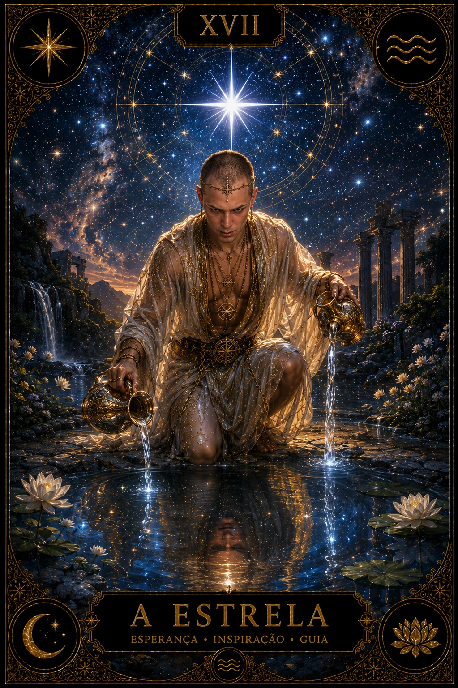

Tiragem de Uma Carta: clareza sem simplificar demais
Uma única carta pode concentrar a atenção em um tema, revelar uma perspectiva e sugerir uma ação possível. A profundidade vem da qualidade da pergunta e da observação, não da quantidade de cartas.
✦No método oficial da Divina Bruxa, a carta aparece sempre em posição direta.

UMA CARTA · MENSAGEM CENTRAL
Cartas
1
Posição
Mensagem central
Orientação
Direta
Objetivo
Foco
QUANDO USAR
Uma estrutura pequena para uma intenção definida
A tiragem de Uma Carta funciona bem para iniciar os estudos, abrir o dia, observar um recurso ou encerrar uma reflexão. Ela pede uma pergunta que possa ser explorada por um único ponto de vista.
☉
Energia do momento
“Que qualidade merece minha atenção hoje?”
◇
Recurso disponível
“O que pode me apoiar nesta situação?”
✧
Aprendizado
“O que esta experiência me convida a compreender?”
→
Próximo passo
“Qual atitude consciente posso considerar agora?”
MÉTODO EM CINCO PASSOS
Como fazer a tiragem de Uma Carta
01
Defina a intenção
Escreva uma pergunta aberta, específica e centrada naquilo que está ao seu alcance.
02
Declare a posição
Escolha uma função, como mensagem central, recurso, desafio, aprendizado ou próximo passo.
03
Observe primeiro
Antes de buscar significados, note personagens, direção dos olhares, cores, gestos e sua reação.
04
Relacione ao contexto
Una imagem, significado da carta, pergunta e posição. Se algo não se encaixa, não force.
05
Faça uma síntese
Registre uma frase de possibilidade e uma ação pequena que possa ser avaliada na realidade.
EXEMPLO PRÁTICO
A mesma carta muda com a posição
Imagine A Estrela. Em “recurso disponível”, ela pode convidar a recuperar esperança e autenticidade. Em “desafio”, pode apontar a necessidade de transformar inspiração em cuidado constante. Em “próximo passo”, pode sugerir agir de modo coerente com aquilo que renova você.
A carta continua a mesma; a posição decide qual aspecto participa da resposta.
Fórmula essencialPergunta · posição · imagem · contexto
COMO INTERPRETAR
Quatro camadas para não depender de uma palavra-chave
1
Descrição
O que está literalmente visível? Descreva a cena sem interpretar por alguns instantes.
2
Associação
Que memória, sensação ou ideia a imagem desperta dentro da pergunta?
3
Conhecimento
Consulte o significado da carta e selecione apenas o aspecto coerente com a posição.
4
Integração
Escreva o que você compreendeu, o que ainda não sabe e qual escolha permanece possível.
DÚVIDAS FREQUENTES
Como preservar a clareza da leitura
Posso tirar outra carta para confirmar?
Antes, registre a primeira leitura e dê tempo para observá-la na realidade. Uma carta complementar só ajuda quando recebe uma função diferente e definida; repetir até chegar à resposta desejada aumenta o ruído.
Uma carta responde “sim” ou “não”?
A estrutura é mais útil para compreender condições, recursos e escolhas. Reduzir símbolos complexos a uma certeza binária pode esconder contexto importante.
Posso usar a tiragem todos os dias?
Sim, desde que ela não substitua decisões ou se torne uma busca compulsiva por garantia. A Carta do Dia oferece um ritual separado para acompanhamento diário.
E se eu não entender a imagem?
Anote o que percebeu sem inventar uma resposta. Depois, consulte a biblioteca das 78 cartas e retorne à pergunta.